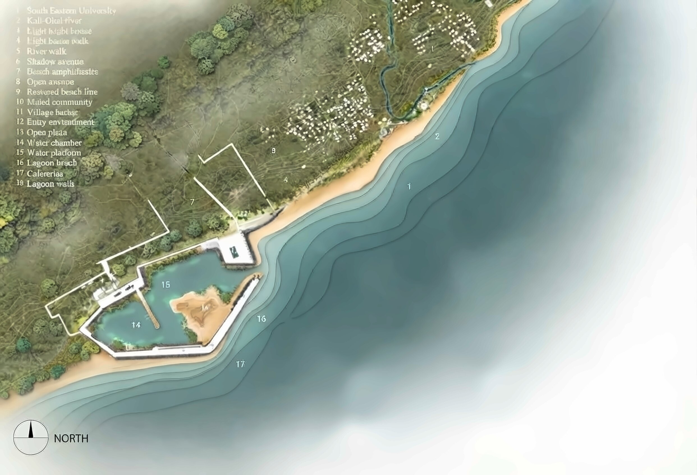
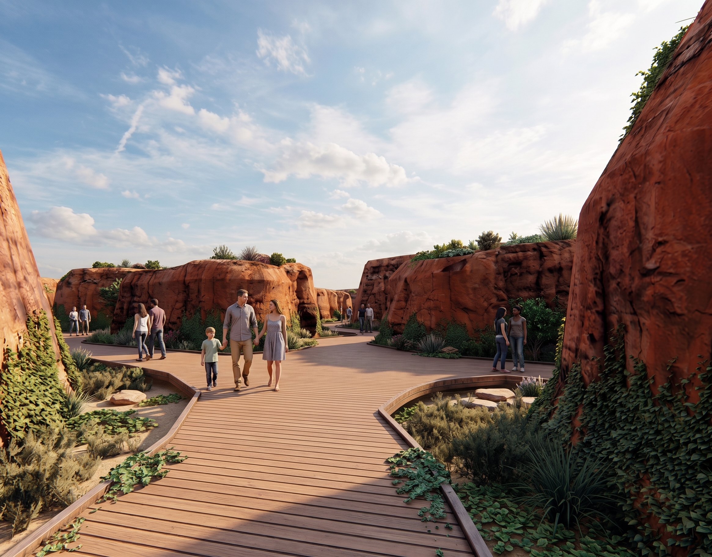
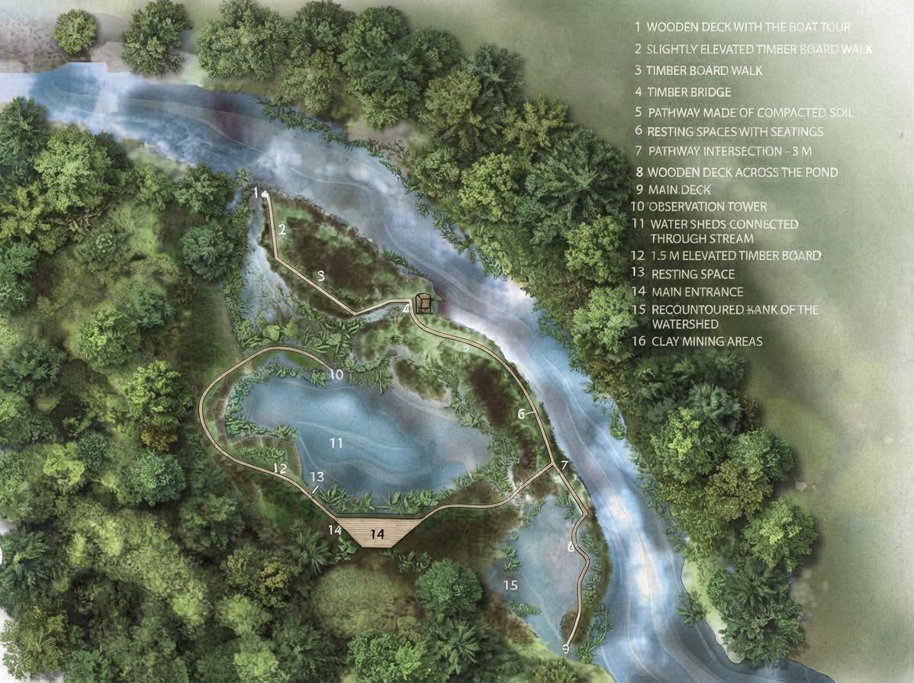
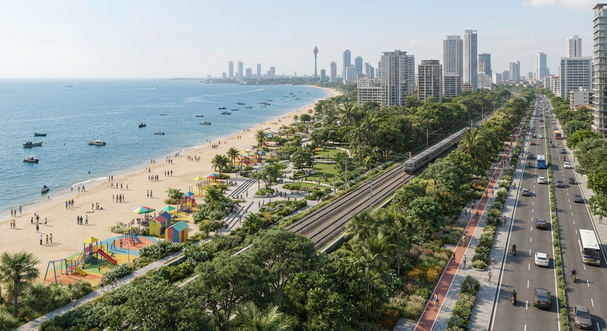
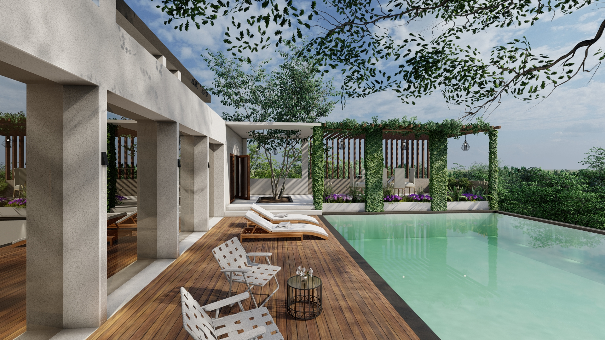
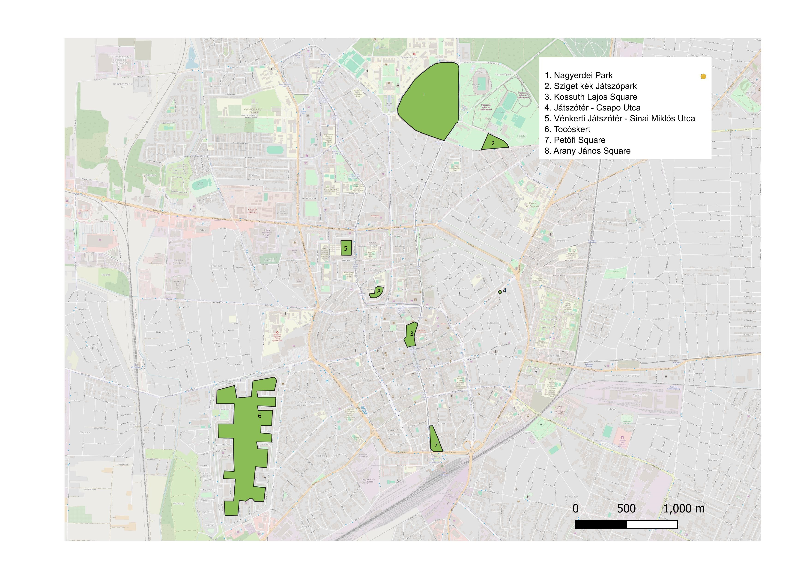
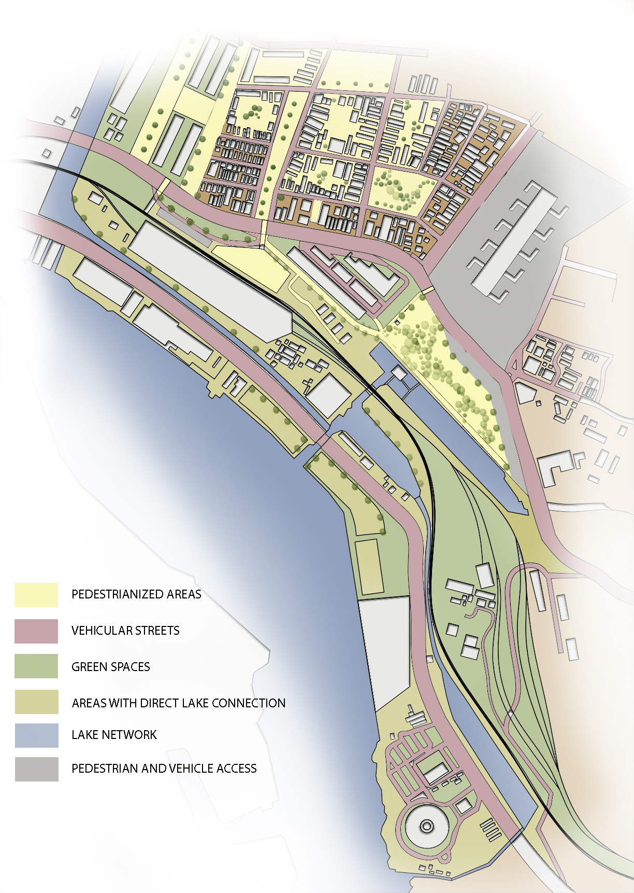
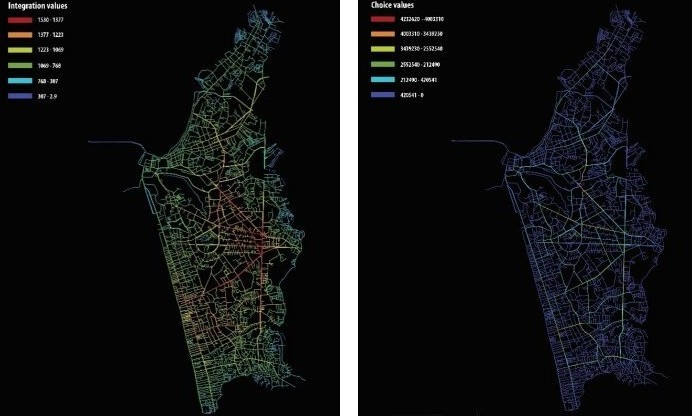
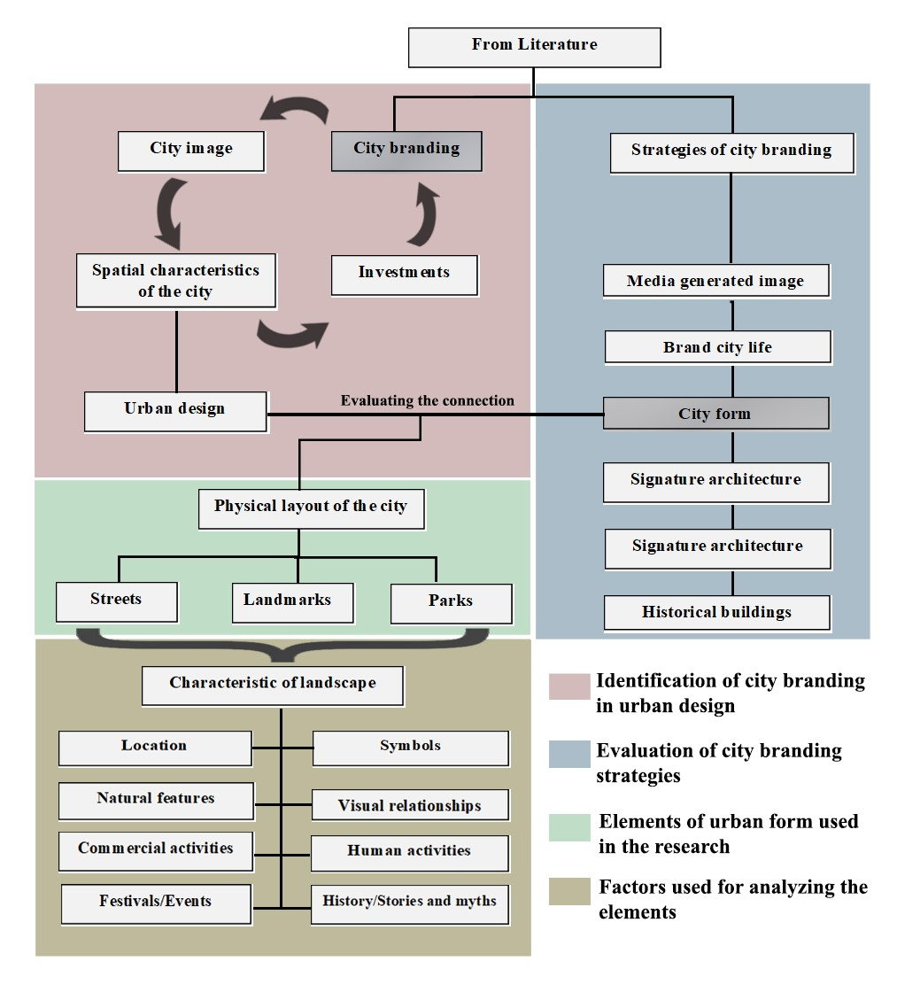
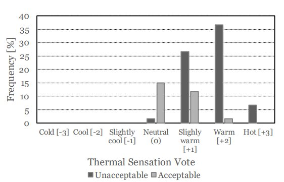

"CLIMATE-RESILIENT CITIES | HUMAN-CENTRED DESIGN"
I am interested in what cities might become as environmental conditions change. My work explores how urban form and ecological systems interact under pressure from heat, flooding, and other climate-related stresses, and what these relationships reveal about the capacity of landscapes to adapt. Using GIS, spatial analysis, field research, and landscape thinking, I trace these patterns across places and scales to explore how evidence can shape more resilient and responsive urban futures, with human experience considered as part of the larger system.
Landscape Architecture & Urban Design
Landscape architecture, urban design, spatial planning and environmental design projects.

Adaptive Waters
A resilient coastal landscape that reconnects ecological restoration, recreation, community spaces, and local livelihoods.

Encountering Dynamism
A reclaimed quarry landscape that reveals geological history and creates new relationships between people and a transformed environment.

River Threads
A river restoration strategy that reconnects fragmented habitats, waterways, and communities across a post-mining landscape.

Coastal Corridor
A 6.2 km public waterfront proposal connecting Colombo's coastline through recreation, open space, and diverse waterfront experiences.

Residential & Resort Landscapes
Selected residential and resort landscape projects exploring outdoor living, planting, recreation, and the integration of landscape with architecture.
Spatial Analytics & Urban Research
Research projects exploring environmental conditions, urban systems, spatial analysis, human perception, and climate-responsive environments.

Assessing the Impact of the Spatial and Demographic Factors on Air Pollution in Urban Green Spaces
An environmental spatial analysis investigating how spatial and demographic factors influence particulate matter concentrations across urban green spaces in Debrecen.

Urban Renewal of Beira Lake and Its Surrounding Areas
An urban renewal study exploring blue-green infrastructure, pedestrian connectivity, and waterfront regeneration around Beira East Lake and Pettah.

Spatial Configuration and Urban Connectivity: A Space Syntax Analysis of Colombo
A GIS and space syntax study examining Colombo's street network and comparing computational measures of connectivity with observed urban movement and activity.

City Form as a Strategy for City Branding
A comparative study of Kandy and Galle examining how landmarks, parks, and streets influence the perception and identity of city brands.

Appraising Indoor Thermal Perception of Elderly in Hot Climates
An experimental field study investigating indoor thermal conditions, elderly residents' thermal perceptions, and adaptive behaviour in aged care homes in Colombo.
Background & Experience
MSc, Urban Systems Engineering
University of Debrecen • Hungary
(Summa cum laude)
BLA (Hons), Landscape Architecture
University of Moratuwa • Sri Lanka
(Second Upper Class)
Academic Instructor
University of Moratuwa • Sri Lanka
Studio and lecture-based teaching in landscape architecture and urban design, with a focus on climate-responsive and sustainable design.
Research Assistant
University of Moratuwa • Sri Lanka
Conducted research on thermal comfort and air quality in tropical environments through field studies, quantitative analysis, and academic publication.
Landscape Architect
Self-Employed • Remote
Delivered end-to-end landscape design projects for residential and commercial clients, from site analysis and concept development to visualisation.
Landscape Architect
ADF Architects • Sri Lanka
Contributed to landscape and architectural projects through design development, technical documentation, 3D visualisation, and site coordination.
Junior Landscape Architect (Intern)
Maritime City Development Project • Sri Lanka
Supported large-scale waterfront, urban park, and infrastructure projects, including environmental assessment and urban space planning.
Honours & Awards
-
▪
TalentUD Diploma for Research — Outstanding Academic Performance, University of Debrecen · 2025
-
▪
Bronze Award — Conference of Scientific Students’ Associations (TDK), University of Debrecen · 2024
-
▪
Stipendium Hungaricum Full Scholarship — Tempus Public Foundation (TPF) · 2023
-
▪
Best Paper Award — FARU International Research Conference, University of Moratuwa · 2021
-
▪
OTDK 2025 — Research Presentation · University of Debrecen
-
▪
FARU 2019 — Research Presentation · University of Moratuwa
Technical Profile
QGIS
Google Earth Engine
SWMM · EPANET
depthmapX
AutoCAD
SketchUp
Lumion
ArchiCAD · Photoshop
Spatial Data Analysis
Quantitative Analysis
Qualitative Analysis
Scientific Writing · EIA
Contact
Open to research and professional collaboration
For inquiries related to urban research, landscape architecture, spatial analysis, or climate-responsive development, feel free to get in touch.